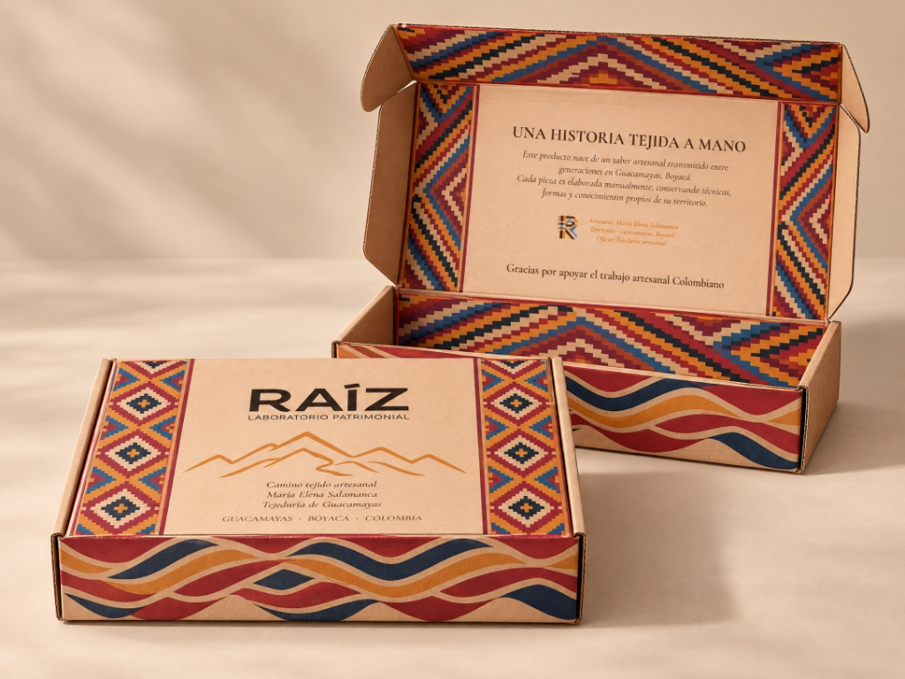

Prototipo de Packaging

Caja editorial en cartón kraft — Tejeduría de Guacamayas
Prototipo de empaque rígido en cartón reciclado con cenefa perimetral inspirada en el tejido de paja de fique, nido interior protector y solapa con relato de origen: “Una historia tejida a mano”.